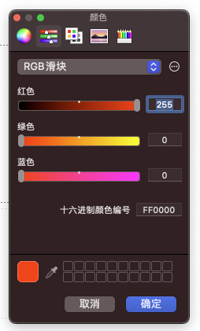

- 00 导读 入门Python的必备知识.md.html
- 00 开篇词 重复工作这么多，怎样才能提高工作效率？.md.html
- 01 拆分与合并：如何快速地批量处理内容相似的Excel？.md.html
- 02 善用Python扩展库：如何批量合并多个文档？.md.html
- 03 图片转文字：如何提高识别准确率？.md.html
- 04 函数与字典：如何实现多次替换.md.html
- 05 图像处理库：如何实现长图拼接？.md.html
- 06 jieba分词：如何基于感情色彩进行单词数量统计？.md.html
- 07 快速读写文件：如何实现跨文件的字数统计？.md.html
- 08 正则表达式：如何提高搜索内容的精确度？.md.html
- 09 扩展搜索：如何快速找到想要的文件？.md.html
- 10 按指定顺序给词语排序，提高查找效率.md.html
- 11 通过程序并行计算，避免CPU资源浪费.md.html
- 12 文本处理函数：三招解决数据对齐问题.md.html
- 13 Excel插件：如何扩展Excel的基本功能？.md.html
- 14 VBA脚本编程：如何扩展Excel，实现文件的批量打印？.md.html
- 15 PowerShell脚本：如何实现文件批量处理的自动化？.md.html
- 16 循环与文件目录管理：如何实现文件的批量重命名？.md.html
- 17 不同操作系统下，如何通过网络同步文件？.md.html
- 18 http库：如何批量下载在线内容，解放鼠标（上）？.md.html
- 19 http库：如何批量下载在线内容，解放鼠标（下）？.md.html
- 20 不同文件混在一起，怎么快速分类？.md.html
- 21 SQLite文本数据库：如何进行数据管理（上）？.md.html
- 22 SQLite文本数据库：如何进行数据管理（下）？.md.html
- 23 怎么用数据透视表更直观地展示汇报成果？.md.html
- 24 条形、饼状、柱状图最适合用在什么场景下？.md.html
- 25 图表库：想要生成动态图表，用Echarts就够了.md.html
- 26 快速提取图片中的色块，模仿一张大师的照片.md.html
- 27 zipfile压缩库：如何给数据压缩&加密备份？.md.html
- 28 Celery库：让计算机定时执行任务，解放人力.md.html
- 29 网络和邮件库：定时收发邮件，减少手动操作.md.html
- 30 怎么快速把任意文件格式转成PDF，并批量加水印？.md.html
- 春节特别放送1 实体水果店转线上销售的数据统计问题.md.html
- 春节特别放送2 用自顶至底的思路解决数据统计问题.md.html
- 春节特别放送3 揭晓项目作业的答案.md.html
- 结束语 和我一起成为10X效率职场人.md.html
- 捐赠
26 快速提取图片中的色块，模仿一张大师的照片
你好，我是尹会生。
当你进行工作汇报使用各种图表时，除了要考虑精确的数据、正确的结论外，合理的配色方案也是精确表达数据的重要部分。
正确的配色不但能让用户更容易get到你演示产品的商业用途，还能为你的数据增光添彩。而不合理的配色，不但会降低用户对你演示产品的兴趣，还容易产生误解。
因此你要为你的数据搭配上合适的色彩方案，来增加数据的表现力。那么你要不要找专门的美工或自己分析那些商业模版用了什么配色呢？其实这两点都不需要，有很多设计高手和名画大师已经为我们提供了太多经典的作品了，我们只需要使用相似的配色，将这些配色应用到你的演示图片和文稿中，就能实现非常好的配色方案了。
我今天就来教你一种利用Pillow库自动分析图片中出现最多的颜色，并自动提取出来的方法。当你再遇到那些为配色发愁的工作场景，就可以找一个你喜欢的商业模版进行模仿了。
在本节课，我打算使用一幅莫奈的名画《日出·印象》来教你，如何使用Pillow库提取图片中被用到最多的五种颜色并将它们作为色块标注在图片上。下面的截图就是我们要实现的最终效果，接下来我就教你如何来实现它。

安装Pillow
在进行图片的大小、格式以及颜色调整时，我们通常选择Pillow，它是Python用于图片处理的第三方库。
那我们就看看怎么安装Pillow。它的安装包是同名的包，但是作为库导入的时候，需要使用PIL关键字，这是它和一般第三方库差异最大的地方。我把它的安装和导入命令写在下方，供你参考。
SHELL$ pip3 install pillow
SHELL$ python3
python3> import PIL #注意导入的库的名称
安装完成后，我们就可以提取图片中使用最多的五种颜色了。不过别心急，在提取色块之前，有一个步骤非常重要，那就是把图片颜色转化为数据。为什么要进行这一步呢？
这主要是为了方便接下来提取色块的操作。你想啊，我们的目的是提取图片中的颜色，而颜色的“多”和“少”，是需要“数出来”的，所以我们就需要把图片转换为可以量化的数字才行。
那么接下来，我就教你怎么把图片转化为数据，并统计出一张图片都有哪些颜色，以及每种颜色的数量。
把图片颜色转换为数据
要想转换图片颜色为数据，并统计它用了多少种颜色，以及哪种颜色用得较多，你要先理解计算机是如何存储一张图片的。
举个例子你会更好理解。假如说你想知道一个硬盘能够存多少张图片，肯定得先知道磁盘的大小，除此之外还要知道图片的大小。与此同时，为了比较两者的大小，你还需要知道它们的大小单位，进而得知一个硬盘里最多能容纳的图片数量。
那我们用来表示一张图片内颜色数量的单位，是一种称作位（bits）的单位。每一“位”对应着一个像素的颜色值，而这些像素则按照一定的顺序排列就形成了数字图像。
计算机可以使用一“位”或者多“位”来组成一个像素，图像的色彩越丰富，每个像素使用的“位”就越多。为了方便表示“位”的数量，我们经常会使用一个叫做“位深度“的概念，来表示当前图像的颜色丰富程度。像是我们常说的8位颜色的图片，那么“位深度”就是8，而每个像素可以用2的8次幂来表示，也就是256种颜色（专业术语叫做256种灰度等级）。
8“位深度”的图像经常用于图片色彩提取和图片预览。不过我们经常见到的图片都是24“位深度”的，这是因为它能表示2的24位颜色，可以把红、绿、蓝（RGB）三基色以2的8次幂表示出来，这些颜色已经超过了人眼能分辨的颜色数量，所以也被称作真彩色，多用于图片的展示。
但是24“位深度”的图像不适合统计颜色数量，因为24位和8位图像存储颜色的方式不同，导致前者在计算准确性和计算性能上都没有8位图像处理起来方便：
在计算准确性上，24位图像保存的数据多，所以在进行像素与像素之间的计算中，会产生浮点数，出现计算数据溢出的情况，并因此导致计算的结果异常。
在计算性能上，8位深度图像和24位表示颜色的方式不同。因为在8位深度的图像中，有一个“调色板（palette）”的概念，这一概念只在8位图像才有，16位以上就都把图像颜色记录到图片自身的数据中了。所以8位图像要想表示一个具体的颜色，需要通过调色板中记录的颜色模版和图片中的模版索引计算之后才能得到，*而*针对*24位图像*，就可以直接把具体的颜色写入到了图片中。
我给你举个例子，例如我把调色板保存在一个列表中，那么由于8位图像能保存2的8次幂位深度，并且每个位深度有R、G、B三种颜色，所以调色板中就可以保存在一个包含了768个元素的列表里。
当你的图片需要使用RGB的某个颜色时，可以在图片文件中只记录该颜色RGB值对应的索引，也就是一个整数数字。而你可以直接通过该数字，找到调色板列表上的R、G、B三个颜色对应的值，这就相当于用一个整数的空间，存储了三个整数。
这样做既可以节省空间，不用真正把RGB颜色存放在图片里，又方便了我们后续来统计该颜色被使用了多少次。
相应的24位图像没有调色板，而是把RGB颜色数据之间记录到文件中，要想统计哪些颜色使用的较多时，进行排序的工作也要比8位图像更加复杂。
这就是一张图片存储颜色数据的单位和不同的存储形式。因此，要想把图片颜色转换为数据，首先要知道当前图片是采用了哪种“位深度”。
- 如果是8位深度，那么图片转化的数字就是该图片在调色板的索引。而你要想得到8位图片的RGB颜色，就需要使用索引与调色板进行二次计算，从而得到RGB颜色。
- 如果是24位深度，那么图片转化为数据的结果就是RGB颜色。
由于我们的需求是统计一张图片中，哪些是使用次数最高的颜色，所以我们只需要把一张图片转化为8位数据来处理就可以了。那么接下来，我就带你学习一下把图片转化为数据的具体操作步骤，从而提取到色块。
提取色块的四个步骤
根据对8“位深度”图像存储颜色的原理，我们可以按照这样的步骤来提取色块。
- 先把24“位深度”的图像转换为8“位深度”；
- 再使用调色板的索引，把8位图像按照使用次数的多少进行排序；
- 之后再把前五个索引对应的调色板的颜色提取出来；
- 最后把色块与图片整合。
转换为8位图像
把24位图像转换为8位图像，我们可以使用Pillow库的Image包来实现。在Image包中，有一个convert()方法，是图像处理经常用到的方法，它可以把图片转换为24位、8位、灰度图以及黑白图片。
在一般的场景中，转换为8位图像是为了加快图片的处理速度。我在这里就以《日出·印象》为例，把24位图像的图片转换为8位图像。代码如下：
from PIL import Image
# pip3 instlal pillow
# 打开图片文件
image = Image.open("./文章26代码/sunrise.jpg")
# 模式P为8位深度图像，每个像素用8个bit表示
image_p = image.convert(
"P", palette=Image.ADAPTIVE
)
image_p.show()
在这段代码中，首先，我们通过“from import”的形式把PIL库的Image包进行导入。由于Image包是一个类，所以我们需要先使用open()函数打开文件，并实例化为image。
需要注意的是，这里Image类的open()方法不但能够以2进制打开图片文件，并且打开后，还可以读取图片包含的像素数量、图片的长宽以及位深度。读取之后，我们后续所有对图片的操作就都可以通过image实例进行操作了。
接着，在代码的第8行，我就对图片进行了位深度转换。代码中的转换为“P”模式，指的就是8“位深度”的图像，palette指的则是转换时指定的调色盘。我们可以通过参数“palette”指定调色盘类型，在统计使用颜色的数量这一场景，使用默认调色盘即可。
转换之后，你可以通过show()函数直接查看转换后的图片，并且会把操作后的图片原图和对比发现，这张画的主体颜色仍然保持不变，但是会加快接下来的图片处理速度。
对出现最多的五种颜色索引进行排序
接下来，我们就要提取图片中被用到最多的5个颜色索引了。在这一步中，我们需要把8位图像的颜色索引都提取出来，并对每个索引的使用次数进行统计和排序。
这两项工作我们可以使用Pillow库的getcolors()方法和sorted()内置函数来实现，我先把代码贴出来，然后再来解释。
# 图像中使用的颜色列表,maxcolors默认256
color_counts = sorted(image_p.getcolors(maxcolors=9999), reverse=True)
这行代码中的“color_counts”保存了从多到少排序之后的颜色索引，其中getcolors()方法会以嵌套元组的形式显示“image_p”的颜色索引使用的次数，以及颜色的索引值。
每个颜色的次数和值组成一个元组，这些元组被包含在一个更大的元组中。而这个嵌套的元组，刚好可以通过sorted()按照从大到小的顺序排序，就得到了图片中哪个色块被使用的区域最多，也就是图片中的出现最多的颜色了。
这里有一点需要你特别注意，由于getcolors()方法默认是被拿来处理8位图像的，因此它的参数maxcolors默认为256，即只能对索引小于等于256的索引进行正确处理。如果颜色索引超过了256，则getcolors()方法会返回“None”，如果你在其他的应用场景中，使用到了24位图像操作，需要手动指定maxcolors的值为更大的数量。
通过对索引从大到小排序，我们就能知道哪些颜色在图片中被使用得多，哪个颜色在图片中被使用得少。最重要的是，我们可以根据索引在调色板中取得颜色真正的RGB值，比如你可以通过RGB值来让PPT模仿图片的颜色。我把PPT中设置RGB值的对话框贴在下面，供你参考。

查表取出RGB的颜色
图片中的颜色索引和RGB值是通过调色板建立对应关系的，这意味着索引不能直接用于PPT等图像软件进行颜色设定，必须转换为RGB颜色，才能对PPT等软件进行颜色设置。所以，接下来我来给你讲一下怎样通过索引取得RGB颜色的思路和代码。
调色板记录的颜色是按照“RGBRGBRGB……”的顺序记录的，每三个为一组。当你通过索引取得调色板的RGB颜色，就可以使用“下标_3”得到“R”，“下标_3+1”得到“G”，“下标*3+2”得到“B”。这样就可以得到该索引对应的RGB颜色值了。
在莫奈这幅画中，我将提取图像中被使用最多的前五个索引，并通过调色板提取它们的RGB颜色 。代码如下：
# 以列表形式返回图像调色板
palette = image_p.getpalette()
# 通过颜色列表查找到真正的颜色
colors = []
for i in range(5):
palette_index = color_counts[i][1]
dominant_color = palette[palette_index * 3 : palette_index * 3 + 3]
colors.append(tuple(dominant_color))
# 输出颜色
print(colors)
# [(204, 154, 86), (230, 237, 226), (213, 213, 212), (251, 238, 206), (82, 167, 204)]
这段代码的colors变量，就是用来得到图片中被使用最多像素的颜色的方法。同时，我再来为你解释一下这段代码，是怎么通过下标得到具体颜色的。
首先，getpalette()是图像调色板的列表形式，我们可以通过下标取得列表中指定的RGB颜色。
接下来，color_counts[i][1]是下标的索引，i的值从0到4，表示图片中颜色从多到少排序的前五个索引。由于color_counts元组包含两个元素，分别是该索引在图片中的次数和索引的值，所以我就使用color_counts[0][1]，来取得当前图片中哪个像素的颜色索引被使用得最多，以及这个颜色对应的具体的值。
最后，我们通过“palette[索引_3 : 索引_3+3]”的形式，得到该索引对应的RGB值为“(204, 154, 86)”，再把五个索引依次转换为五个RGB颜色之后，加入到colors列表中。那么colors列表的五个元素，就是《日出·印象》这幅画用得最多的五种颜色。
当我把colors列表中的五个颜色RGB值提取出来后，就可以直接用于颜色设置了。接下来我继续利用Pillow把这五个颜色绘制到图片中。
将色块与图片整合
在把取出来的五种颜色绘制到图片中这一步，其实我们要做的是把色块与图片进行整合。我来解释一下这个操作。因为我们取出来的是RGB值，这些数字不够直观，那么最好的办法是把数字作为图片，和原画放在一起进行比较，看看提取的颜色是不是原画出现最多的颜色，而利用出现最多的颜色，我们就能模仿大师的配色了
要想把色块和图片整合，需要使用Pillow的paste()方法，它能在指定的图片位置按照指定的RGB颜色与原图片合并。
为了让你更直观地看到这幅画中用得最多的五种颜色，我把它们制作成 100*100 像素的正方形，放在原始图像上，方便你和原画进行比较。代码如下：
for i, val in enumerate(colors):
image.paste(val,(0+i*120, 0 ,100+i*120, 100))
# 保存并显示图片
image.save("./文章26代码/sunrise2.jpg")
image.show()
这段代码展示了合并后的图像，并把图像保存成“sunrise2.jpg”文件。
在这段代码中，最主要的功能是就是使用“paste()”方法按照颜色和位置进行图像绘制。这幅画使用最多的五个颜色是使用for循环迭代，从colors变量取出的，为了避免每次与图片合并的正方形色块被覆盖，我把它的输出位置每执行一次向右侧移动120个像素。所以我使用了“enumerate(colors)”形式读取colors变量的值。在遍历过程中，i的值是从0开始，每执行一次i的值+1,val的值每次为colors迭代的RGB颜色元组。
代码最后两行是对新生成的图片进行保持保存，以及在当前运行界面显示图片的操作。通过观察图片，我们发现提取的五个颜色刚好和主色调吻合。
我把合并好的图片和完整代码放在下面，供你参考。

from PIL import Image
# pip3 instlal pillow
# 打开图片文件
image = Image.open("./文章26代码/sunrise.jpg")
# 模式P为8位深度图像
image_p = image.convert(
"P", palette=Image.ADAPTIVE
)
# image_p.show()
# 以列表形式返回图像调色板
palette = image_p.getpalette()
# 图像中使用的颜色列表,maxcolors默认256
color_counts = sorted(image_p.getcolors(maxcolors=9999), reverse=True)
# 通过颜色列表查找到真正的颜色
colors = []
for i in range(5):
palette_index = color_counts[i][1]
dominant_color = palette[palette_index * 3 : palette_index * 3 + 3]
colors.append(tuple(dominant_color))
# 输出颜色
print(colors)
# [(204, 154, 86), (230, 237, 226), (213, 213, 212), (251, 238, 206), (82, 167, 204)]
for i, val in enumerate(colors):
image.paste(val,(0+i*120, 0 ,100+i*120, 100))
# 保存并显示图片
image.save("./文章26代码/sunrise2.jpg")
image.show()
小结
最后，让我来为你总结一下本讲的主要内容。在本讲中，我通过Pillow带你学习了如何提取图片中出现最多的像素，并将像素的RGB值进行打印的功能。
通过对提取名画的颜色主题功能，你还可以将提取颜色应用于商业模版，或任何你感兴趣的颜色搭配上。利用更讨喜的颜色搭配，来为你的PPT增色添彩。
本讲中除了让你掌握如何使用Python对图像操作外，更想让你明白，在计算机中对很多非数字化的元素，也是可以进行计算的，当然计算的前提是将它们转化成可量化的数字，像是深度学习领域中，对语音、文字、图像的处理，都是以将它们数字化为前提进行的。因此当你遇到非数字化的对象，需要进行自动化操作时，也可以使用将非数字化转化为数字化的思路去解决办公难题。
思考题
按照惯例，我来为你留一道思考题，如果有多张图片需要提取其中的主要颜色，你怎样自动化实现它们的颜色提取和文件保存操作呢？
欢迎把你的思考和想法分享在留言区，我们一起交流讨论。如果今天的内容对你展示工作成果有帮助，也欢迎你把课程分享给你的同事和朋友，我们一起做职场上的效率人。
© 2019 - 2023 Liangliang Lee. Powered by gin and hexo-theme-book.